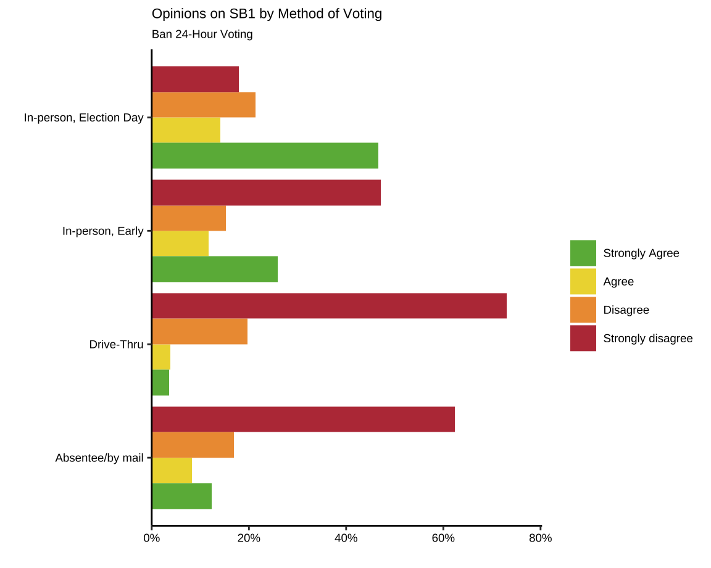
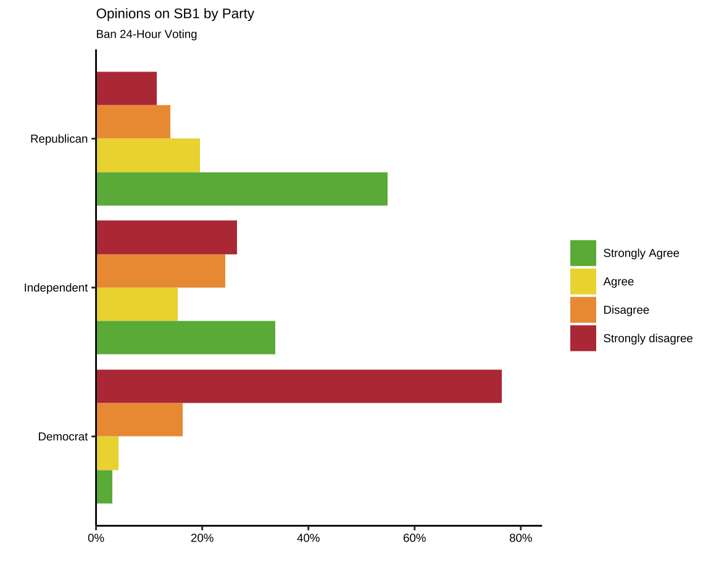
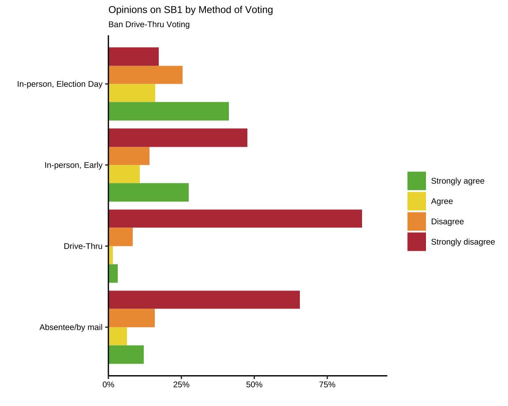
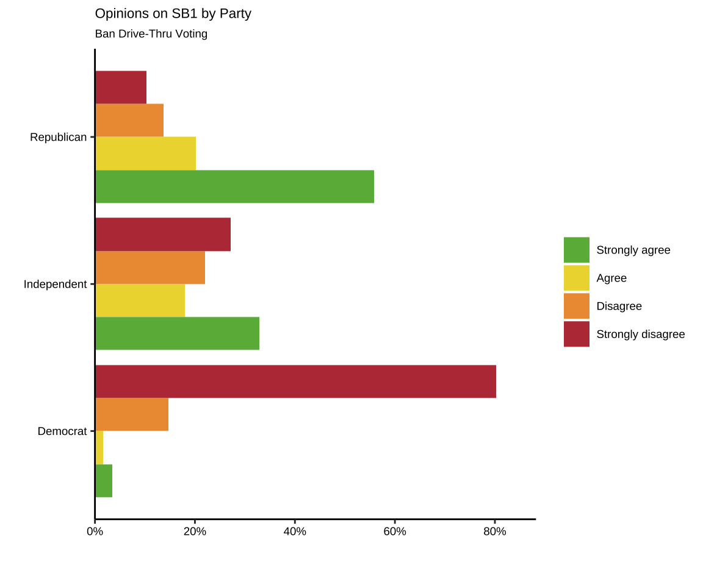
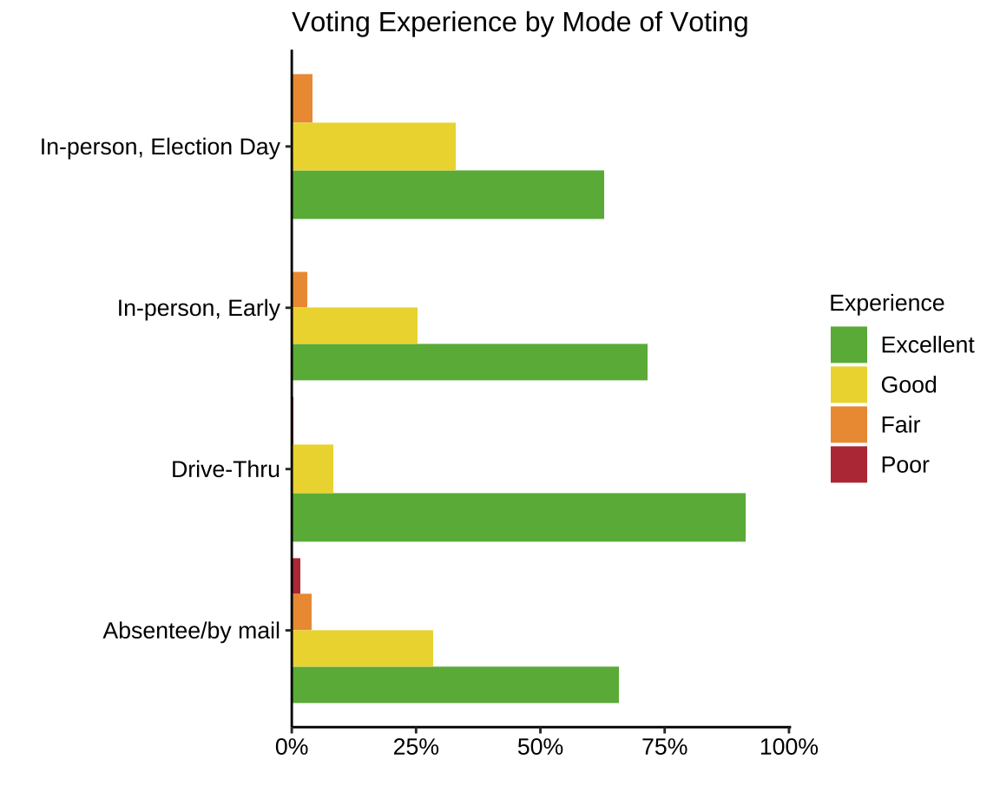
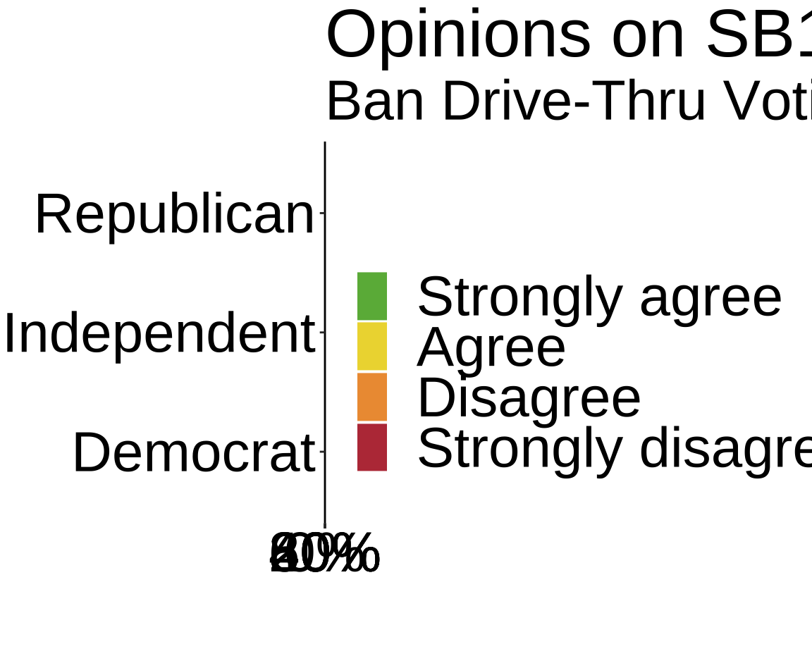
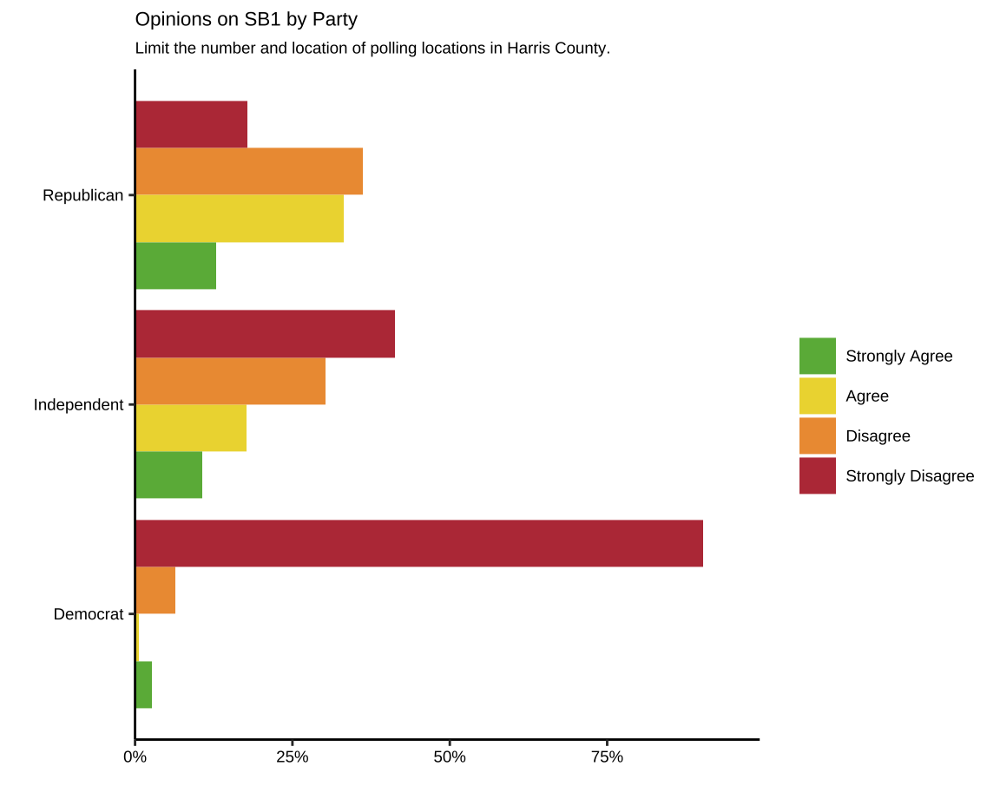
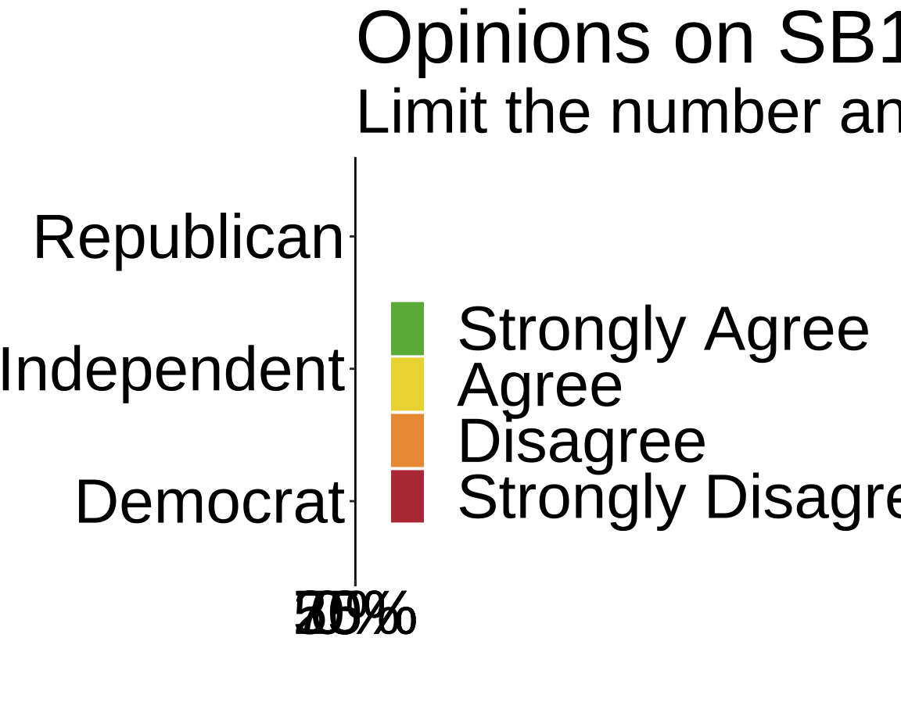
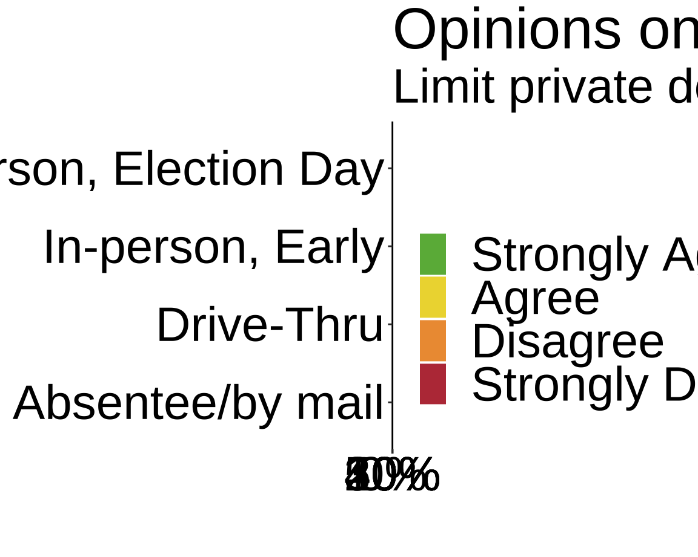
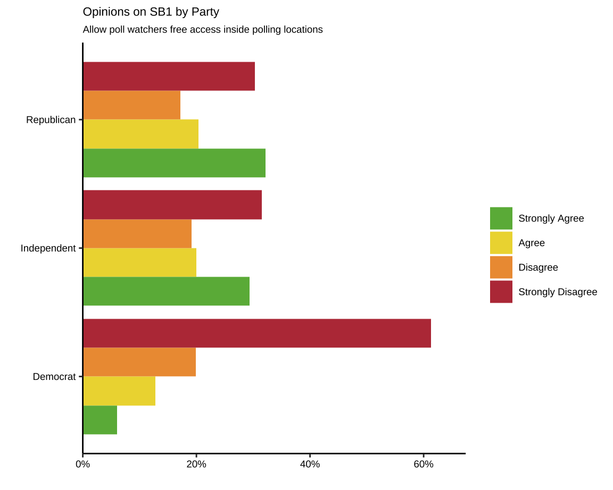

Opinions on Texas SB 1
“Ban 24-hour Voting”" by Method of Voting

“Ban 24-hour Voting”" by Party

“Ban Drive-Thru Voting” by Method of Voting

“Ban Drive-Thru Voting” by Party

“Limit the number and location of polling locations in Harris County” by Method of Voting

“Limit the number and location of polling locations in Harris County” by Party

“Limit private donations to counties to fund the cost of conducting elections” by Method of Voting

“Limit private donations to counties to fund the cost of conducting elections” by Party

“Allow poll watchers (who represent candidates and political parties) free access inside polling locations” by Method of Voting

“Allow poll watchers (who represent candidates and political parties) free access inside polling locations” by Party
